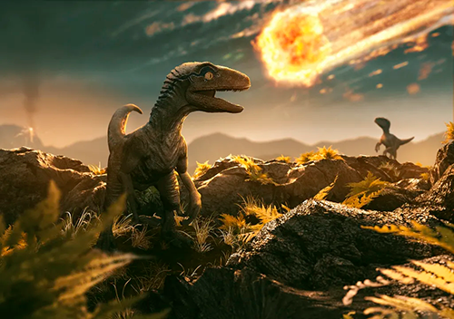

A Fascinante História do Nosso Planeta Terra
A história do planeta Terra é um conto épico que abrange bilhões de anos, repleto de mudanças dramáticas e eventos transformadores. Desde sua formação até os dias atuais, a Terra passou por uma série de fases que moldaram sua paisagem, atmosfera e a vida que a habita. Vamos embarcar em uma viagem no tempo e explorar os principais capítulos dessa incrível história.

1. A Formação e a Era Primitiva:
Há cerca de 4,6 bilhões de anos, a Terra começou a se formar a partir de uma nuvem de poeira cósmica. Durante suas primeiras centenas de milhões de anos, o planeta estava repleto de vulcões em erupção e frequentes impactos de asteroides, enquanto a atmosfera começava a se desenvolver. Nesse ambiente hostil, as primeiras formas de vida começaram a surgir, em sua maioria micro-organismos simples.
2. A Era dos Dinossauros e a Pangeia:
Cerca de 250 milhões de anos atrás, a Terra testemunhou a formação do supercontinente Pangeia, onde todas as massas de terra estavam unidas. Durante essa época, os dinossauros dominaram o cenário, evoluindo em uma incrível variedade de espécies. No entanto, cerca de 65 milhões de anos atrás, um evento cataclísmico - possivelmente um impacto de asteróide - levou à extinção em massa dos dinossauros e abriu espaço para a ascensão dos mamíferos.
3. A Deriva Continental e a Era Glacial:
Nos últimos 200 milhões de anos, a deriva continental separou os continentes e criou os ambientes geográficos que conhecemos hoje. A Terra passou por períodos de aquecimento e resfriamento, incluindo eras glaciais que moldaram paisagens e influenciaram a evolução da vida. Os primeiros seres humanos surgiram durante esses períodos e aprenderam a se adaptar às mudanças climáticas.